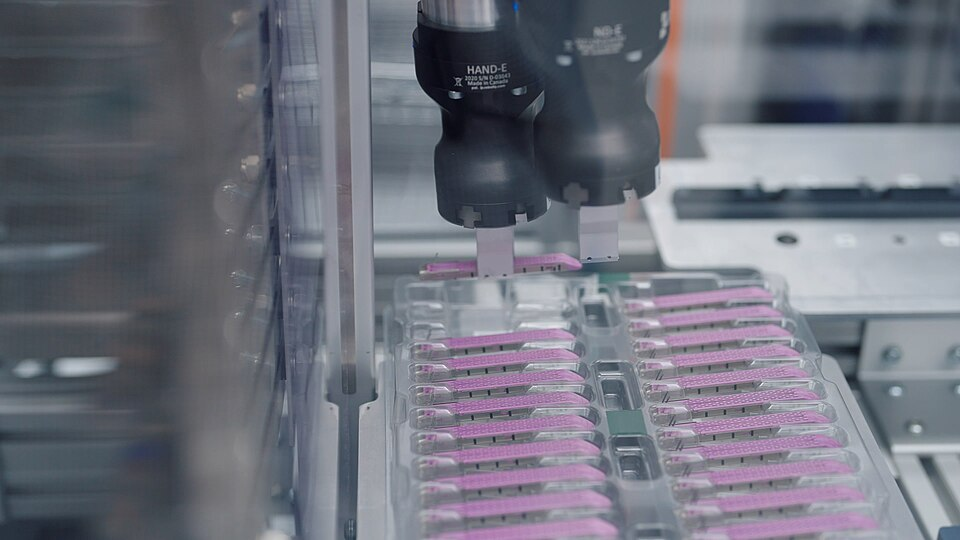

MODULE・延伸視野
新興數位加工設備
3D 列印、雷射切割、CNC 之外,數位製造仍在快速演進。本模組帶你認識正在改變製造業的新設備與新技術。
前面學到的三種機具,是目前校園與自造空間最普及的數位加工設備。但在產業界, 還有許多更專業、更新穎的技術正在崛起——它們有的精度更高、有的能加工金屬、 有的甚至能把實體世界「掃描」回電腦。點開下方卡片,認識它們。

新興設備圖鑑
🧠 動動腦 動動手
技術配對挑戰
先點開上方至少 4 張卡片認識這些技術,再完成下方 4 題配對。
（請先展開 4 張以上的設備卡片)
💡 知識小百科
從「製造」到「智慧製造」
這些新設備有一個共同方向:更自動、更整合、更聰明。當數位加工設備串連感測器、 雲端與 AI,就形成所謂的「智慧製造」或「工業 4.0」—— 機器能自我監控、預測故障、最佳化生產。第 3 章的「AI 輔助分析」與生成式設計, 正是這股趨勢在「設計端」的體現。
🔍 觀念釐清
這些技術各自的定位
- 3D 掃描是把「實體 → 數位」,方向和 3D 列印相反,兩者常搭配做「逆向工程」。
- 光固化樹脂列印與 FDM 同為 3D 列印,但用 UV 光固化液態樹脂,精度高得多。
- 生成式設計嚴格說是「軟體／演算法」,不是機器,但它正深刻改變設計的方式。